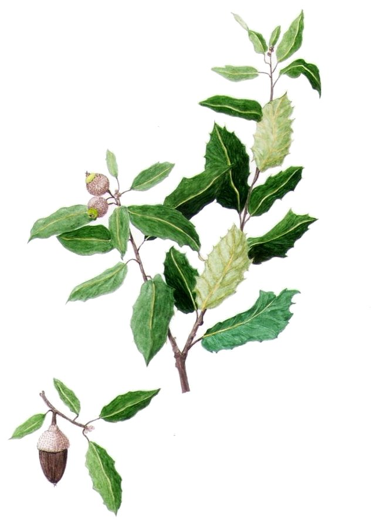

Harir
fortifiant (infusion) - 30 po
↪ plante - montagne - été
↪ plante - montagne - été
 Cette plante qui donne des feuilles semblables au houx mais beaucoup moins épaisses pousse en altitude. La consommation de son infusion qui mélange ses feuilles et ses glands durcit l'épiderme après un délai de 10 minutes.
Cette plante qui donne des feuilles semblables au houx mais beaucoup moins épaisses pousse en altitude. La consommation de son infusion qui mélange ses feuilles et ses glands durcit l'épiderme après un délai de 10 minutes.
Une infusion de harir réduit de 1 les dégâts contondants, perforants et tranchants que vous recevez d'armes non magiques pour une durée de 10 minutes. Plusieurs doses ne cumulent pas le bonus, mais chez certains montagnards qui en ont consommées régulièrement depuis des années, l'effet deviendrait permanent.

Illustration reproduite avec l'aimable autorisation de Christine Achard
Illustration reproduite avec l'aimable autorisation de Christine Achard
Recueil des plantes d´AideDD